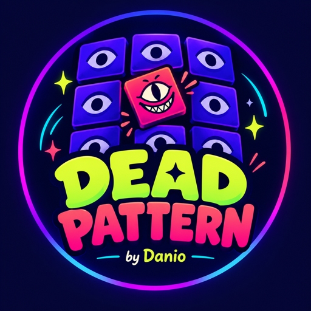

DEAD PATTERN
Every story leaves a pattern. By Danio.
DEAD PATTERN publishes short stories as vertical videos: scary stories, real unsolved mysteries, confessions and twist endings, each about a minute long.
Watch on YouTube.
DEAD PATTERN Studio
DEAD PATTERN Studio is the private production tool behind the channel. It runs on the creator's own computer and publishes finished videos to the channel's own YouTube, Facebook and TikTok accounts through their official APIs. It is not offered to the public and does not sign in other users.
Contact: unkaheestudio@gmail.com